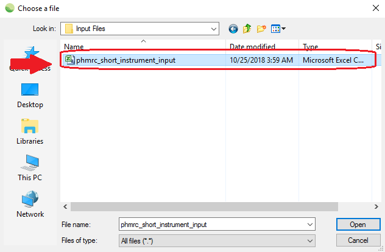
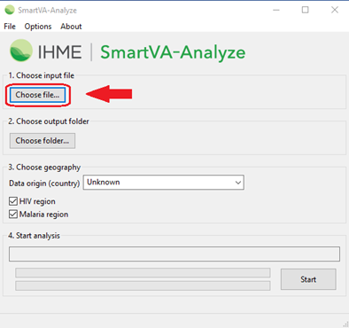
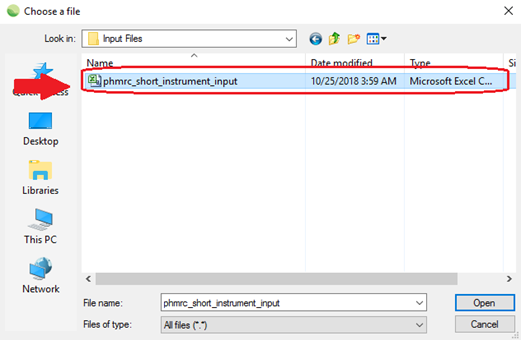
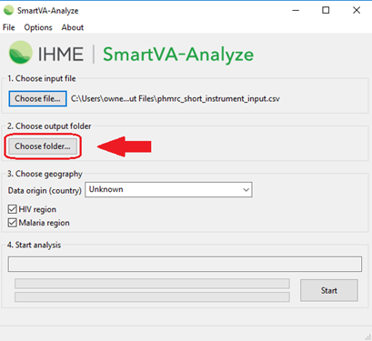
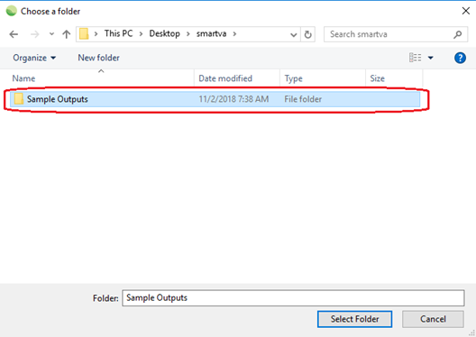
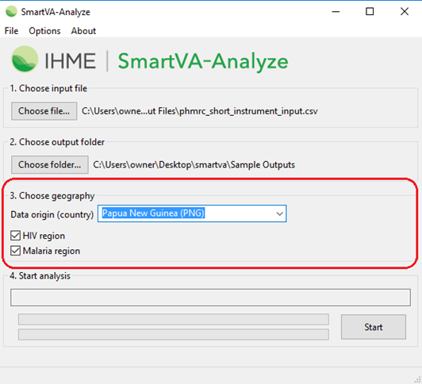
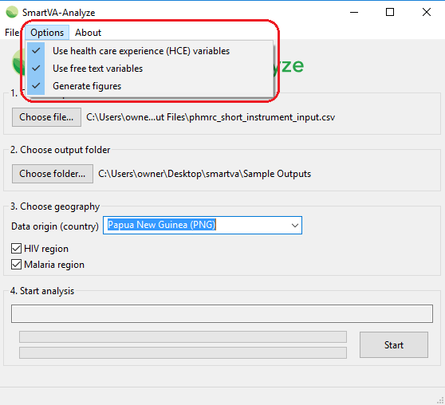
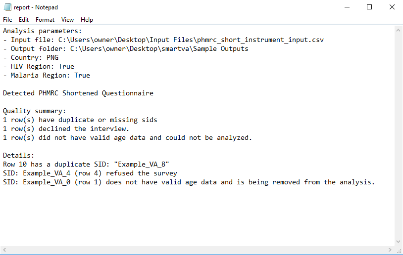
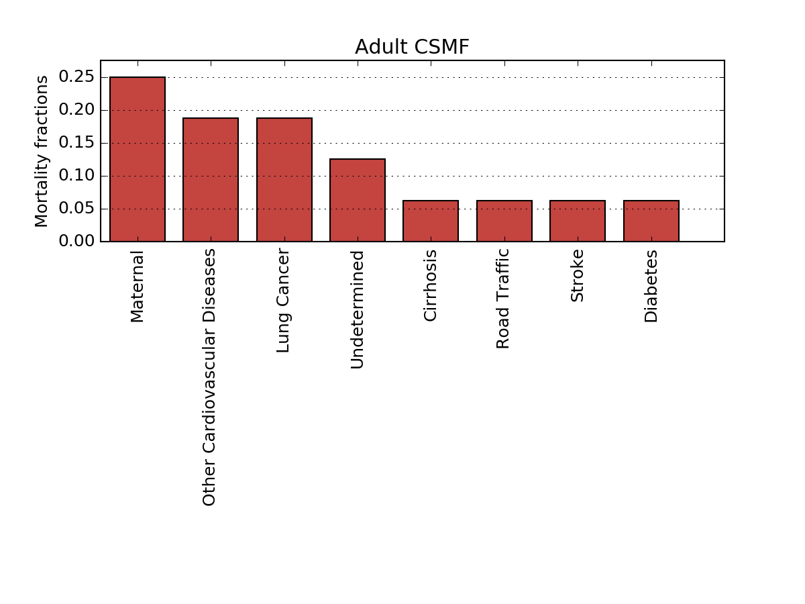

SmartVA-Analyze
2.1 Help
An
instruction manual for using SmartVA-Analyze 2.2,
which implements the Tariff 2.0 Method for computer certification of verbal
autopsy (VA).
Contents
Contents
Overview
System requirements
General description of Tariff 2.0
Instructions for use of SmartVA-Analyze 2.2
Step 1 – Prepping input VA data
Step 2 – Selecting input data
Step 3 – Selecting output location
Step 4 – Defining input parameters
Step 5 – Selecting options
Step 6 – Running SmartVA-Analyze
2.1
Step 7 – Analyzing output files
Frequently asked questions
Overview
This document is an instruction manual for using SmartVA-Analyze 2.2, which implements the Tariff Method for computer certification of verbal autopsy (VA). It takes VA interview data as inputs and produces cause of death estimates at the individual and population levels.
System requirements
· Windows 7, 8, or 10
· 2 GB RAM (minimum)
General description of Tariff 2.0
The Tariff 2.0 cause-of-death assignment algorithm was designed and validated with the Population Health Metrics Research Consortium (PHMRC) Gold Standard VA database. With proper mapping, it can be applied to any VA survey. The approach uses tariff scores and ranking against the PHMRC Gold Standard Dataset to assign individual causes of death. Tariffs are cause-of-death-specific normalized endorsement rates for each symptom reported in the PHMRC Gold Standard dataset. The formula for a tariff for cause/symptom pair (i,j) is the following:

The tariff scores of VAs are calculated by taking the
sum of all of the tariff scores for the symptoms that were endorsed by that VA.
Once the tariff scores are calculated for all of the VAs in your dataset, they are compared to the tariff scores for VAs whose true cause of death is known from the PHMRC Gold Standard VA Dataset. The cause of death with the best tariff score when compared to the Gold Standard VAs for that cause of death is then assigned to that VA as the Tariff-Method-assigned cause of death.
The results are then assessed for prediction quality, and low-scoring predictions are marked as undetermined for individual-level estimates. These causes are redistributed based on country-specific cause fractions for population-level estimates.
Instructions
for use of SmartVA-Analyze 2.2
Step 1 – Prepping input VA data
SmartVA-Analyze is designed for analyzing VA data that have been collected electronically using either the PHMRC Shortened Questionnaire, the PHMRC Full Questionnaire, or the WHO 2016 Instrument on the ODK Collect system on Android devices. SmartVA-Analyze requires as an input the .csv file such as that output from the ODK Briefcase Software. ODK Briefcase can be downloaded from http://opendatakit.org/use/briefcase/. Such a .csv file can also be generated by ODK Aggregate (https://opendatakit.org/use/aggregate/), or created by you as a data prep step, if you have not used the SmartVA ODK instrument for data collection (i.e. if your data were collected with pencil and paper forms and then manually entered into an electronic database).
The ODK form for the PHMRC Shortened Questionnaire can be downloaded here: http://www.healthdata.org/verbal-autopsy/tools.
The ODK form for the WHO 2016 Instrument can be downloaded here: http://www.who.int/healthinfo/statistics/verbalautopsystandards.
Step 2 – Selecting input data
Once your input data .csv has been prepared using ODK Briefcase, ODK Aggregate, or your custom process, you can open SmartVA-Analyze and select the location of your input data.


Step 3 – Selecting output location
Select where you would like the output from the analysis to be saved. The output from the Tariff Method will be saved in different subfolders within the folder you select in this step.


Step 4 – Defining input parameters
Three additional options can be specified under 3. Choose geography:
Data origin (country)
You may select the country where the VA data were collected. This information is used for reallocation of undetermined VAs to present results for the entire population of VAs.
Individual observations from the data are not reallocated. Instead, the age and sex distribution of the undetermined VAs in your sample are used to adjust the estimated population-level cause-specific mortality fractions (CSMFs) based on the Global Burden of Disease estimates for the country of VA origin, weighted according to the Tariff Method performance for each of the causes. Since the Tariff Method was developed using validated VAs, it is known which causes of death it underestimates and will adjust the CSMFs of those causes in the final CSMF step.
If no country of origin is specified, the undetermined VAs will not be reallocated, and an additional category of “Undetermined” will be shown on the final CSMF graphs and CSV files.
HIV region
You must determine whether HIV is a possible cause of death in the country from which the VAs were collected. If the prevalence of HIV is known to be greater than 0.1%, select the box next to “HIV region”. If the box is not selected, the Tariff Method will not assign HIV as a cause of death.
Malaria region
You must determine whether malaria is a possible cause of death in the population from which the VAs were collected. If transmission of malaria is known to occur in the area from which VAs are being collected, select the box next to “Malaria region”. If the box is not selected, the Tariff Method will not assign malaria as a cause of death.
Step 5 – Selecting options
Three additional options can be specified under the “Options” dropdown. By default, these options are selected because they allow the software to analyze the full data in the VA questionnaire.

Health Care Experience (HCE) variables
The user should determine whether, as part of the survey, questions regarding the health care experience (HCE) of the deceased or his/her family are relevant. If the box next to “Health Care Experience (HCE) variables” is not checked, these variables are not included in the analysis, and the software will use appropriate training data that are not enhanced with HCE variables.
If respondents of the survey do not answer the following questions that are considered “health care experience”, then the HCE option should not be selected:
· For adults, the question, “Was the deceased ever told by a health professional that he or she ever suffered from one of the following?” followed by a list of chronic conditions.
· Any data that were transcribed from health records.
· For all age modules, responses to the question, “Could you please summarize, or tell us in your own words, any additional information about the illness and/or death of your loved one?”
Free text variables
The Tariff Method has the capability of analyzing open response portions of the VA by turning them into “free text” variables.
The open response questions are the following:
1. “Could you please summarize, or tell us in your own words, any additional information about the illness and/or death of your loved one?”
2. Transcription of medical records and death certificates that are available at the time of interview.
3. “What did the health care worker say?” if “Did a healthcare worker tell you the cause of death” is endorsed.
If your data have an open response component and you would like this to be analyzed by the Tariff Method, make sure the box next to Use free text variables is selected.
The Tariff Method currently is capable of analyzing open response data in English only.
Generate Figures
SmartVA-Analyze can generate .png figures along with its estimations. If the box next to “Generate Figures” is not checked, these figures are not produced.
Step 6 – Running SmartVA-Analyze
2.1
After selecting all of the required inputs, press the “Start” button to begin analysis.

This is what it looks like when SmartVA-Analyze is running:

When processing finishes, the status box shows “Processing complete”.

Step 7 – Analyzing output files
SmartVA-Analyze has several output files. These files can be found in the output folder you specified earlier:

The files containing the individual-level cause of death assignments for your data are in the folder “1-individual-cause-of-death”.

For individual-cause-of-death files, each row contains information about one death, including its unique identifier (“sid”), geographical information reported on that VA, age, sex, and the estimated cause of death and associated ICD-10 code.
The other subfolders in the output folder contain tables and graphs that show the CSMFs for each age and cause. More information about these files can be found in the SmartVA-Analyze Output Interpretation help.
The file called “report.txt” in the folder “4-monitoring-and-quality” alerts the user to any rows that did not have a unique identifier, had a duplicate identifier, refused the interview, did not have a valid age, or had multiple cause predictions of the same likelihood. VAs without a unique identifier, valid age or where the respondent refused the interview will not be analyzed through SmartVA-Analzye.

This output is showing that one observation had a duplicate identifier, one observation refused the VA survey and was not analyzed, and one observation had invalid age data and was not analyzed.
Frequently asked questions
Q: What are the age cutoffs for “Adult,” “Child,” and “Neonate” VAs?
A: The age cutoffs are:
|
Age module |
Age range |
|
Adult |
12 years and older |
|
Child |
29 days – 11 years old |
|
Neonate |
≤28 days old |
Q: How does the Tariff Method assign an undetermined cause of death?
A: The Tariff Method assigns a tariff score to each VA in the input data for every possible cause of death. Each VA’s tariff scores are then ranked against the tariff scores from the PHMRC Gold Standard Dataset. If a VA in the input data has tariff scores that are significantly lower than all of the tariff scores in the Gold Standard Dataset, it will receive a cause of death of undetermined.
Q: What are the files “adult-endorsement-rates.csv” and “adult-symptom.csv”?
A: The “adult-endorsement-rates.csv” file reports the percentage of respondents who answered “yes” to a particular question for each predicted cause category”. The “adult-symptom.csv” file contains dichotomized or Yes/No variables that are the direct inputs for the Tariff Method analysis.
Q: How do I interpret the graphs?
A: The graphs show bars whose heights are proportional to the estimated cause-specific mortality fraction (CSMF) for each of the causes of death on the cause list for that age module. These graphs include the added weights that were applied from the undetermined VAs.
